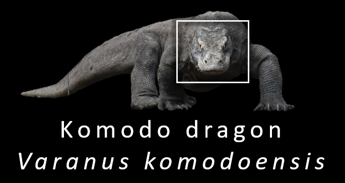
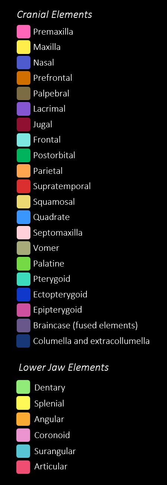

Komodo Dragon Skull Anatomy
Skull of a Komodo dragon, Varanus komodensis, with bones colored and labelled to demonstrate skull anatomy. This 3D model was produced from a CT scan of a Texas Natural History Collections specimen (tnhc:herpetology:95803). Segmentation and mesh files generated using VGStudio Max. Meshes further edited in Blender. Skull anatomy labelled using Evans, Susan E. “The skull of lizards and tuatara.” Biology of the Reptilia 20 (2008): 1-347.

